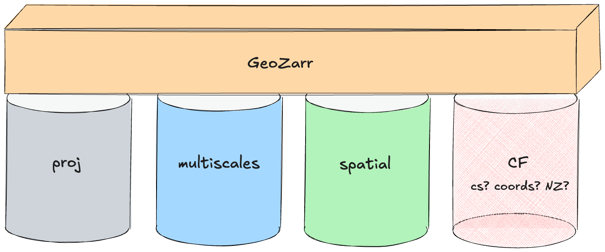

Max Jones, GeoZarr SWG Chair
CF Conventions Community Workshop. 22 September, 2026
Context. How CF's relationship with GeoZarr has evolved over time.
Building blocks. How CF's capabilities can be incorporated into GeoZarr.
Consensus. What people generally agree about, and what they don't.
What's needed. How the CF community can support Zarr for climate and forecasting.
None of these pivots impacted encoded data. Every turn in this story is a metadata operation.
// netCDF-style. every value.
"lat": [59.995, 59.985, 59.975, … 12,000 more …]
// the raster world. six numbers.
"spatial:transform": [0.01, 0, -180, 0, -0.01, 60]At scale the arrays dwarf the data, rounding quietly breaks exact regularity, and CF has no way to assert that spacing is even.
// CF Appendix F. a dummy variable of attributes.
"crs": { "grid_mapping_name": "transverse_mercator",
"scale_factor_at_central_meridian": 0.9996, … }
// what pyproj, rioxarray, and GDAL speak.
"proj:code": "EPSG:32633"CF's vocabulary cannot express everything the geospatial software stack emits.

// sst.zarr group "attributes" (illustrative; UUIDs shortened)
{
"zarr_conventions": [ // A
{"uuid": "d0e6…", "name": "proj"},
{"uuid": "9e12…", "name": "spatial"},
{"uuid": "41af…", "name": "multiscales"}
],
"proj:code": "EPSG:4326", // B
"spatial:bbox": [-180, -60, 180, 60] // C
}uuid, never the name.proj, spatial, and multiscales are widely implemented. GDAL, rioxarray, and web viewers read them today.CF conventions can be decomposed based on whether the metadata is required for correctly decoding values and whether the metadata is domain agnostic.
// sst.zarr array attributes
"scale_factor": 0.01,
"add_offset": 273.15,
"_FillValue": -9999A reader that ignores these gets wrong values, integers instead of kelvin. That fails the safely-ignorable test.
// sst.zarr array metadata
"codecs": [
{"name": "fixedscaleoffset",
"configuration": {"scale": 100, "offset": 273.15}}
]Every Zarr reader unpacks it, with no CF knowledge at all. The capability survives, the attribute convention does not need to.
// the proj convention. three interchangeable forms.
"proj:code": "EPSG:32633"
"proj:wkt2": "PROJCRS[\"WGS 84 / UTM 33N\", …]"
"proj:projjson": { "type": "ProjectedCRS", … }Adopted from STAC's proj extension. What pyproj, rioxarray, and GDAL already emit and consume.
CF's grid_mapping vocabulary survives as a one-way import alias. Read the old form, write the new one.
Explicit coordinates are the top-ranked need in the August survey and the gap blocking netCDF-style data. Today there are multiple competing proposals, two of them substantial drafts.
coords. A discovery layer in the domain-agnostic base. Maps each dimension to a descriptor. Explicit array, inline values, start/end/step interval, or a reference to another convention.
cs. Coordinate sets on an OGC referencing model, in the geospatial layer. Owns CRS, calendars, parametric vertical, bounds. The next talk presents it.
Around the edges. geolocation for 2-D lat/lon, nz re-hosting netCDF structure below the conventions layer.
sst.zarr/
├─ zarr.json root group
├─ sst/ float32 (time, lat, lon)
├─ time/ float64 (time)
├─ lat/ float64 (lat)
└─ lon/ float64 (lon)The xarray layout, untouched. Coordinate values stay in sibling arrays.
// sst/zarr.json "attributes"
"zarr_conventions": [
{"uuid": "6ca4454a-…", "name": "coords"}
],
"coords:coordinates": {
"time": {"type": "array", "path": "../time"},
"lat": {"type": "array", "path": "../lat"},
"lon": {"type": "array", "path": "../lon"}
},
"coords:version": 1One descriptor per dimension, on the data array, saying how the values are represented and where they live. Other descriptor shapes: inline values, implicit start/end/step, or a reference delegating to another convention such as spatial.
sst.zarr/
├─ zarr.json root group
├─ sst/ float32 (time, lat, lon)
└─ time/ float64 (time)
// no lat/ or lon/ arrays. the regular
// grid lives in the metadata itself.Regular axes need no arrays at all. Irregular ones, like time here, stay as referenced arrays.
// zarr.json group "attributes" (abridged)
"zarr_conventions": [{"cs"}, {"ref"}, {"proj"}],
"crs": {
"WGS84": { "type": "planar",
"axes": { "lon": {"coordinates": [{"unit": "degrees",
"values": {"regular": [-179.995, 0.01]}}]},
"lat": … same shape … },
"id": {"proj:code": "EPSG:4326"} },
"standard_calendar": { "type": "temporal",
"axes": { "time": {"coordinates": [{
"time": {"unit": "day", "epoch": "1900-01-01",
"calendar": "standard"},
"values": {"external": {"ref": {"node": "../time"}}}}]}}}
}A coordinate set grouped per CRS, on the OGC referencing model. Values are inline regular pairs, embedded lists, or external arrays via ref.
sst.zarr/
├─ zarr.json root group
├─ sst/ float32 (time, lat, lon)
├─ time/ float64 (time)
├─ lat/ float64 (lat)
└─ lon/ float64 (lon)An array named lat whose only dimension is lat is the coordinate. Structural, no attribute needed.
// zarr.json root group "attributes"
"zarr_conventions": [
{"uuid": "d0a980b5-…", "name": "NZ-1.0"}
],
"conventions": "NZ-1.0 CF-1.12"
// lat/zarr.json. the name matches its one dimension.
"shape": [12000], "dimension_names": ["lat"],
"attributes": {
"standard_name": "latitude",
"units": "degrees_north"
}The NUG coordinate-variable rule, re-hosted on Zarr v3. Unmodified CF-1.12 applies on top through the conventions string. No new coordinate vocabulary at all.
coords adds one routing option beyond these, a reference delegating a dimension to another convention such as spatial.
The August survey across CF and GeoZarr developers converged on the needs. Eleven coordinate capabilities, nearly all marked need by nearly everyone. Explicit 1-D coordinates are a must-have for all, with 2-D coordinates, bounds, and non-standard calendars close behind.
"GeoZarr recommends exactly one way to do each thing."The one disagreement. A deal-breaker for two participants, a preference for most who answered, opposed by one.
One possible shape to reduce duplication between the drafts while supporting semantic equivalence. One option per coordinate type.
Simple to write. Using CF in Zarr should be simple and easy, for data producers and for spec authors.
Nothing breaks. All software that works with CF today should work with Zarr conventions.
Trivial round trips. Converting from NetCDF-CF to GeoZarr, and back, should be super easy, with nothing lost in either direction.
Note that this trend makes the zarr-conventions/CF strawman proposal obsolete. Also, the OGC voting mechanisms need sorting out, so a formal vote is a backstop.
824906b, the December 2025 reset.